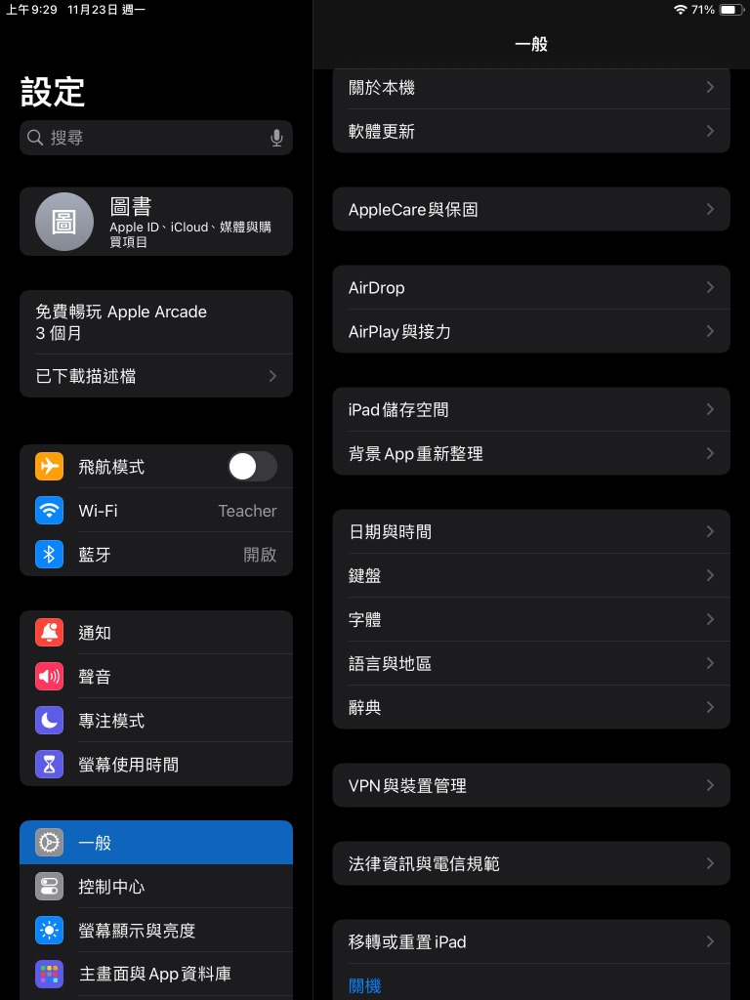
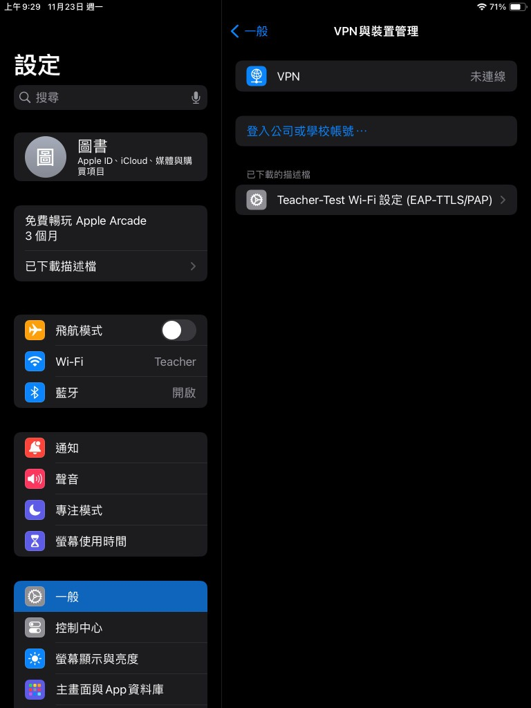
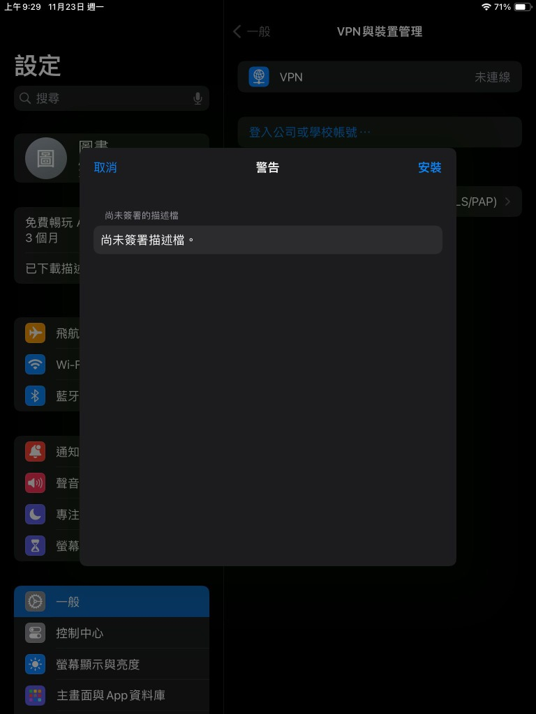
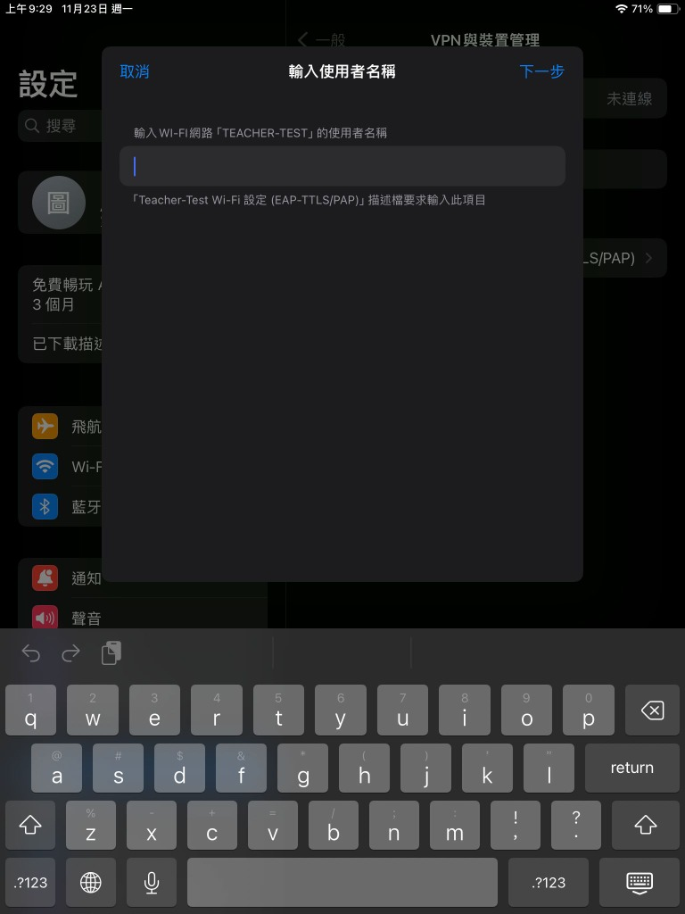
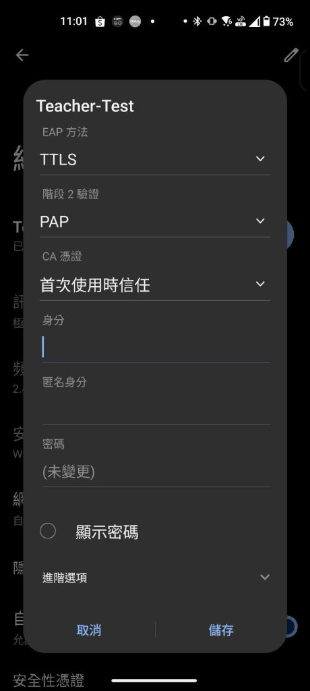
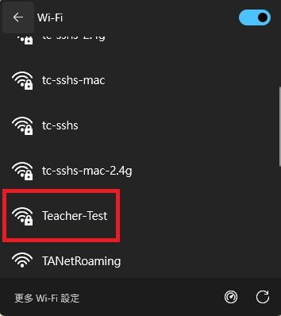
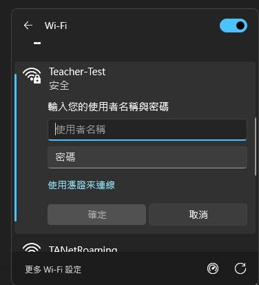
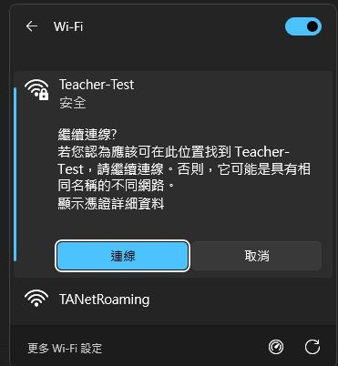

Teacher-Test_教師WiFi連線教學
全校教職員無線網路認證指南 ｜ 支援 Apple (iOS/Mac)、Android 手機與 Windows 筆記型電腦
下載 Teacher-Test 快速連線描述檔
iPhone / iPad / Mac 使用 Safari 下載此描述檔後，即可於系統設定直接安裝，免手動輸入複雜的通訊協定！
步驟 1 前往系統「設定」檢視描述檔
下載完成後，打開 iPhone / iPad 的「設定」，點選最上方的「已下載描述檔」（或進入「一般」➔「VPN 與裝置管理」）。

步驟 2 選取 Teacher-Test 描述檔
在「已下載的描述檔」清單中，點選「Teacher-Test Wi-Fi 設定 (EAP-TTLS/PAP)」進行安裝確認。

步驟 3 確認警告提示並點選「安裝」
若畫面出現「警告：尚未簽署描述檔」系統安全性提示，此為校內自建描述檔正常現象，請直接點選右上角「安裝」。

步驟 4 輸入學校信箱帳號前段與密碼
依系統導引輸入教職員身分憑證：
t999，不含 @ 後網域）輸入完成後點選「下一步」，設備將立即自動連線至 Teacher-Test 高速網路！

Android 系統 Wi-Fi 連線設定參數表
在 Android 手機 Wi-Fi 清單中點選「Teacher-Test」，並務必將預設的 EAP 與階段 2 驗證手動修改為下方設定：
| Wi-Fi 名稱 (SSID) | Teacher-Test |
|---|---|
| EAP 方法 重要需修改 |
TTLS
(預設通常為 PEAP，請點選下拉切換為 TTLS)
|
| 階段 2 驗證 重要需修改 |
PAP
(預設為 MSCHAPV2，請切換為 PAP)
|
| CA 憑證 | 首次使用時信任 （或「不進行驗證」） |
| 身分 (使用者帳號) |
輸入學校信箱帳號前段（例如：t999）
|
| 匿名身分 | 保持空白，不需填寫 |
| 密碼 | 輸入你的學校信箱登入密碼 |

Windows 連線設定三步驟
Windows 系統連線方式非常直覺，系統會自動處理 EAP-TTLS 協定，依照下方步驟即可快速完成連線：
STEP 1 選取 Teacher-Test
點擊右下角工具列 Wi-Fi 圖示，在清單中找到並點選「Teacher-Test」。

STEP 2 輸入使用者名稱與密碼
帳號輸入學校信箱前段（例如：t999），密碼輸入信箱密碼，點選「確定」。

STEP 3 信任憑證完成連線
若跳出「繼續連線？若您認為應該可在此位置找到...」，請直接點選「連線」即可順利上網。

離線教學資源下載
可下載完整圖文連線教學 PDF 手冊離線查閱留存